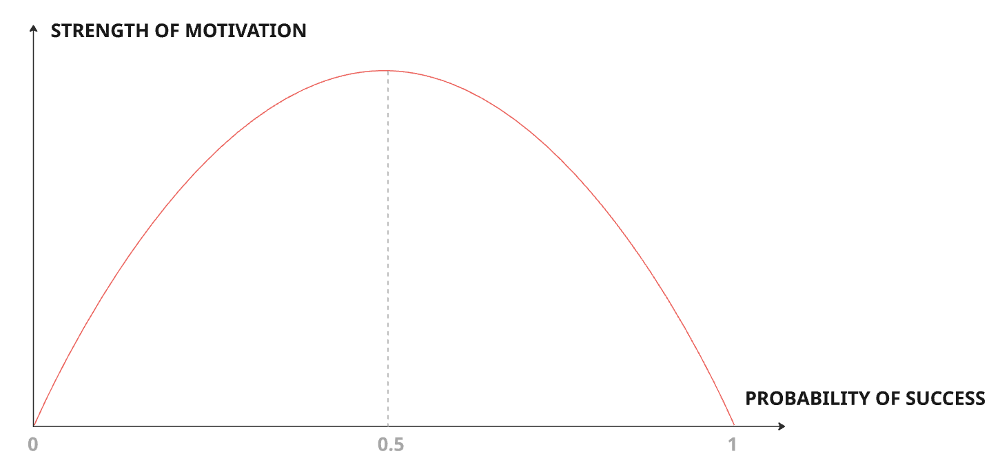

1. Our Brain
There are four “parts” of the brain:
- Reptilian brain
- Paleolimbic brain
- Neolimbic brain
- Prefrontal brain
1.1. Reptilian Brain
Also called the “primitive brain”. Responsible for survival instincts; only concerned with individual self, not others. When the reptilian brain is active, we feel stressed.
Name comes from the (erroneous) belief that this comes from reptilian ancestors, whereas it actually goes back even further likely to a common ancestor of all vertebrates.
Controls the three possible responses to a threat:
- Flight
- Fight
- Freeze
In the modern world, this survival instinct kicks in when we experience stress or anxiety, even if it is not life threatening. As a response to stress, these manifest as:
- Flight - Anxiety and fidgeting.
- Fight - Aggression and anger.
- Freeze - Helplessness.
We can recognise the reptilian brain being active when people behave in one of the three stress responses.
1.2. Paleolimbic Brain
Responsible for the survival of the group. Stems from the herd behaviour of early mammals; living together maximises survival but this social set up requires regulating.
The paleolimbic brain defines the position of the individual within the wider group. This manifests as self-confidence and trust.
- Dominance isn’t just being brash; dominant people can be charming and nice, but this is a manipulation tactic and not genuine. Others are evaluated in terms of their usefulness to the dominant person. “Too much” self-confidence becomes a belief that one is entitled to more than others. In the extreme case, this leads to Narcissistic Personality Disorder.
- Submissive people believe all of their successes are due to luck and anything that goes wrong is their fault. This is in contrast to dominant people, who will take credit for all success and blame others for all failures. In its most extreme form, submissiveness leads to melancholic depression.
- Marginal people have no trust in anything or anyone. Conspiracy nuts.
- Axial people have too much trust in others to the point of gullibility. Becomes mystical delirium in its most extreme form.
Dominant behaviour is the most problematic. But the paleolimbic brain is cowardly. It is rare in nature that power struggles are actually fights to the death. After encountering some resistance, the dominant type will back off.
The paleolimbic brain can change but only very slowly. The exception is traumatic events, which can quickly shift the paleolimbic brain “downwards”, but there are never quick shifts “upwards”.
We can recognise the paleolimbic brain being active when people behave territorially.
1.3. Neolimbic Brain
Responsible for our intrinsic and extrinsic motivations; our likes and dislikes.
Where our memory resides. Usually “in charge” for routine tasks and uses the minimum attention span required to achieve them; our “standby mode”.
Three layers of motivation:
- Intrinsic motivation. This is fixed, and is a result of genes and very early experiences. This remains fixed from 3 months old for the rest of our lives. Intrinsic motivations give us energy and joy.
- Extrinsic motivations. These continuously evolve for our whole lives. Likes and dislikes. They cost us energy and will fade if we don’t succeed. Extrinsic motivations push us to do what others expect of us, adhere to social pressures. Irritations and prejudices stem from here. Intrinsic motivations will last, but extrinsic motivations will fade away.
- Obsessions. A passion that has gone beyond a tipping point. We are often blind to our obsessions.
1.4. Prefrontal Brain
This is unique to humans; ours is far bigger than any other animal. It is suited for adaptation and creativity in unknown and complex situations.
Neolimbic brain handles the well-known and simple tasks. It is not able to see further than our previous experiences. Prefrontal brain handles the new, unknown and complex tasks.
Or at least it should kick in for these new situations. Often creativity is limited because the neolimbic brain kicks in, meaning we can’t see any possibilities which we haven’t already experienced.
2. Brain-based Leadership Styles
- Leadership is mostly a neolimbic activity, relying on experience and good judgment in “standby mode” for the sake of the wider group.
- Dominance is a paleolimbic activity, and only seeks the good of the individual.
2.1. Reptilian Leader
Led by stress. Reactive, constantly in survival mode.
We can think of 3 sub-categories of reptilian leader based on their typical threat response:
- Fight - Aggressive
- Flight - Chaotic.
- Freeze - Terrified, never making decisions.
2.2. Paleolimbic Leader
They are territorial. Manipulative, deceitful, power games.
We can think of 4 sub-categories of paleolimbic leader based on trust vs assertiveness:
- Dominant. Rule through fear, initiates aggression, shouts, intimidates and publicly humiliates.
- Marginal. Paranoid. Don’t trust anyone so micromanage.
- Axial. No boundaries. Wants to be everybody’s friend.
- Submissive. Exchanges favours to bargain for things. Takes responsibility for every failure. Often does the work of his team, not because of a lack of trust like a marginal leader, but because they lack the skills to rally the team or impose their views.
Nobody is always one single type. A common combination is for a leader to be dominant with their team but submissive to their boss. Scheme and manipulate.
2.3. Neolimbic Leader
Authentic.
Sub-categories:
- Philosopher. Optimistic, curious, seek consent. Performs well in stressful environments where they have a calming influence on the team.
- Innovator. Innovation, abstract, theoretical, interdisciplinary. Respectful and empowering for their team. Perform well in research environments.
- Animator. Change, strong sensations. High energy and playful. Perform well in consulting where the constant change of environment is a draw.
- Administrator. Admin and safety, planning. Love procedures and process.
- Strategist. People management. Mediate and actively solve problems. Support their team. Excel in HR, middle management, logistics and planning.
- Competitor. Fighting and conquest. Hands on. Status driven. Perform well in sales and short-term projects.
- Participative. Sharing and caring. Leadership with kindness, where everyone is important. Perform well in HR, coaching.
- Supportive. Selfless. Demanding towards themselves and tolerant towards others. Perform well in back office or customer service.
In practice, we are all some combination of 2-4 of these archetypes.
2.4. Prefrontal Leader
Calm, serene, curious.
Able to adapt and handle complex situations.
Favours reflection over rushing decisions. Listens to the team without caving to peer pressure.
3. Our Genetic Programming
Think of this like the software that comes pre-installed in our brains.
There are two sets of programs that get activated depending on the context:
- Survival instincts
- Personality
3.1. Survival Instincts
There are only really two scenarios from a survival point of view: facing danger and safe.
3.1.1. Facing Danger
When facing danger, there are the three familiar stress responses: fight, flight or freeze.
Stress is jokingly referred to as a “visually transmitted disease”. Research shows that seeing someone stressed is enough to make us stressed. From an evolutionary standpoint, if another person in the tribe has identified a danger then we should also be more vigilant.
We should be extra conscious as leaders that we are reducing the stress around us, not just picking it up and amplifying it.
Sometimes we are unknowingly the threat, causing stress among the team, particularly as a dominant boss. An example of this is setting deadlines; naively this is used to give the team some momentum. Brain research shows it actually limits our thinking and leads to worse decision making.
A tight deadline increases stress levels causing the reptilian brain to engage, when ideally we would be using the prefrontal cortex. The more stressful the deadline, the less open we are to alternative approaches. Putting extra pressure on a team is counterproductive; the three stress responses are fight (aggression), flight (confusion) or freeze (demoralisation).
3.1.2. Safe
When safe, there are two considerations: avoid danger and avoid starvation.
Avoid danger
We are hard-wired to avoid danger. People with “reckless genes” tend to remove themselves from the gene pool so there is an evolutionary bias towards avoiding danger. “Successful people are simply those with successful habits”.
This manifests as:
- Resistance to change. To get people to embrace change you have to deactivate their reptilian brain, take away the perceived danger. Activate their limbic system by making them think for themselves; give them info and let them reach the conclusion.
- Lack of initiative. Address this by taking away the danger, assure them that no one will be in trouble for bad ideas. A “flop meeting” where everybody shares things that have gone wrong. Reward initiative taking with money, attention, etc.
- Need for repetition. Repetition tells our brain that something is true, not just an outlier. “It takes 5 (repetitions) to stay alive”.
- Herding. A good survival strategy is to eat things that we’ve seen others eat so that we know it’s safe. This is still true in “non-survival” settings. Social proof is powerful. Start with willing early adopters, then point to their success when getting others on board.
How to handle change as a manager:
- Be on their side
- Reward initiative taking
- Repeat the message
- Create momentum through early adopters
Avoid starvation
We have an in-built need to feel safe from the fluctuations in food supply from a bad hunt or bad harvest. Studies show the modern day equivalent is with money.
Money is a double edged sword. Not enough salary means people are forced into submissiveness, activating the paleolimbic brain and resulting in frustration and resentment. Too much money has the opposite effect; still activating the paleolimbic brain but forcing them into dominance, creating greedy, entitled people.
3.2. Personality
Personality profiles are an outdated practice based on Jung’s work.
Personality depends on many factors: genetics determine some part of it, but which genes get activated depend on our environment, how much attention we received as a child, etc. Nature and nurture.
Intrinsic/primary motivations. Doing the activity gives us energy; we get joy from the act of doing it regardless of results. These are lifelong activities that we enjoy.
Refer back to the 8 neolimbic leader archetypes.
3.3. Relational Stress Management
A person may move between these stress modes over time when in the “facing danger” frame of mind, but it is helpful to recognise which mode they are in and address it accordingly.
3.3.1. Flight / Flee
The signs:
- Hands and feet - Contained movements: Fidgeting, nail biting, leg shaking, tapping, fiddling.
- Eyes - Erratic eye movement and avoiding eye contact. Looking for an escape route.
- Fast breathing and sweating.
How not to handle it:
- Telling them to calm down doesn’t help. This will be interpreted as a further restriction of their options, causing them to panic more.
- Don’t ask closed questions (“yes” or “no”). Their answers will most likely be evasive (“I don’t know”).
- Do not shout or threaten. Reminding them of the negative consequences or deadlines makes things worse.
- Judging and moralising.
How to handle it:
- Ask open questions. This helps remind them that they are free to choose and do have options. If they are having trouble organising their thoughts you can suggest some options.
- De-dramatise and use humour. Put the situation into perspective.
- Invite them to take a walk with you. Their instinct is to flee and this gives them the option of doing that.
3.3.2. Fight
The signs:
- Stance - Standing tall
- Voice - Raising their voice
- Eyes - Squinting to focus on “the enemy”
- Neck and jaw clench
How not to handle it:
- Don’t overpower them by yelling harder. The fight will escalate.
- Don’t undermine their authority. Don’t interrupt or laugh at them.
- Don’t annoy them. They will be impatient so being slow will anger them.
How to handle it:
- Listen without interruption or resistance. It takes two to fight so if you don’t engage the fight won’t happen.
- Take responsibility, don’t make excuses. If you weren’t to blame you can say “I’m sorry if what I did made you feel that way. That wasn’t my intention”. “If I were you I’d be angry too”.
- Offer solutions
“You don’t have to attend every argument you’re invited to”.
Pick your battles. Some fights aren’t worth having.
3.3.3. Freeze
The signs:
- Movement - They literally stop moving; they drop their jaw or put hands in front of their mouth. This stops the arrival of oxygen to the lungs in an attempt to slow the heart rate.
- Shoulders and head hang
- Eyes - Looking down
- Cover face with hands
- Voice - Lower their voice
- Speech - Talk slower and use smaller sentences and words.
- Sighs and maybe even tears.
How not to handle it:
- Don’t shake them up, tell them to get a grip etc. The frozen person doesn’t want to be autonomous.
How to handle it:
- Understand their POV
- Mirror their pose
- Respect their silence and give them space
- Define small objectives together
To get them out of their reptilian brain mode we need to take away the perceived danger. In freeze mode, this means offering them shelter.
4. Our Prior Experience
We explore our extrinsic motivations and how the expectations of others influences what we do.
We don’t see the world as it is but as we are. Our mind is good at filling in the blanks, and it fills it with what we know. We could look at the same scene and perceive it differently: someone being confident vs arrogant vs entitled vs aggressive vs an impostor.
4.1. Socratic Questioning
If we encounter unacceptable behaviour, we can address it head on and tell someone not to do that. But it doesn’t change their behaviour or perceptions. It just means that they will continue with their belief system, but be more careful about whom they share their comments with and when; they will learn to hide it better but they won’t learn to be a better person.
The Socratic questioning technique can help challenge people’s belief systems. This needs to be one-on-one; others can’t be listening as this needs to be open and honest. Invite the person somewhere quiet. It is important to stay neutral and not express judgement. Explain that you overheard XYZ comment and you want to address it. From then on, just act as a mirror to their responses, question what they say. Let them reach the conclusion themselves and eventually apologise.
Making crass remarks is usually the paleolimbic brain in charge. The Socratic method forces the prefrontal brain to kick in.
4.2. Extrinsic Motivations
Emotional feelings of hurt generate the same brain response as physical pain. We have evolved to be deeply social animals and this gives rise to our extrinsic or secondary motivations. This kicks in at the neolimbic level to help us come together as a group and adapt to each other.
The more alike we are, the more likely we were to be accepted into the group. This is why rejection hurts so much - it’s a warning mechanism that we are in physical danger, isolated from the safety of the group.
The opinions of others mattered and we adapted our behaviour to the norms of the group.
Characteristics of extrinsic motivations:
- Variable. They change over time or depending on the group.
- Cost energy. They don’t come naturally and require intentional work.
- Results-driven. If the behaviour is successful, the motivation is reinforced, otherwise it fades away.
When hiring people, it is helpful to determine whether the role fits a person’s intrinsic or extrinsic motivations. A successful way to do this is to match the job description to a personality type (or two) and ask questions to determine whether a person shows traits of that personality type.
Another case is when we change somebody’s role to include more tasks which are not aligned with their intrinsic motivations. Research shows that only 30% of the job needs to be aligned with our intrinsic motivations in order for their overall job to feel enjoyable. (We have a high tolerance for bitch work.) But obviously we should aim for higher than 30%.
4.3. Employee Engagement
There are two ingredients to achieve employee engagement:
- Oxytocin makes sure the team bonds.
- Dopamine makes sure each individual enjoys their work.
4.3.1. Oxytocin
Oxytocin is the love hormone and regulates our relaxation, trust and psychological stability. It can neutralise the negative effects of stress by lowering cortisol levels. It causes our team to be more cohesive, less stressed, help each other more.
Caring and sharing is the key to releasing oxytocin. Collaborative projects, create interdependencies, promote knowledge sharing. Give them shared responsibility and shared rewards.
4.3.2. Dopamine
Hormone responsible for reward and pleasure.
It fades away and we become used to a stimulus - if an activity (or drug) gives us a dopamine hit now, then next time it will give slightly less. Or from another perspective, we will need more of the stimulus to get the same dopamine hit next time. This is the key behind addiction.
Anticipation of a stimulus triggers the dopamine hit, not just the stimulus itself, so anticipation is a key part. Hire based on intrinsic motivations so that people anticipate a dopamine hit from doing their job.
The job needs to evolve to keep things interesting and keep releasing dopamine. Adapt objectives. Set goals over shorter time frames to give a steady stream of dopamine hits. Celebrate achievements.
4.4.Red Flags
4.4.1. Instant Gratification
The ability to delay gratification is a strong predictor of success in life.
Delaying gratification is about more than just sheer willpower. It depends on our upbringing and our level of trust. If you believe the world is stable and trustworthy, you will feel more comfortable sacrificing now and be confident that you will see a reward later. If you see the world as hostile, you will prioritise instant, certain rewards.
We need to answer the following questions about our team:
- How many of your team members understand why they are working? Do they know the vision?
- How important is that vision to them?
- Do they trust your capabilities to achieve that vision?
Repetition is key. We can’t just say it once and expect them to believe it. What the brain hears repeated becomes true. Repetition is key. Repetition is key.
The manager is part of the team, not a separate entity.
4.4.2. Self Evaluation
The Dunning-Kruger effect: ignorance begets confidence, not knowledge.
Incompetent people overestimate their skills. Competent people underestimate their skills.
Hiring and promotions are susceptible to being gamed by overconfident incompetent people. Micromanagement is another effect if a clueless manager thinks he knows more than his team.
Those more susceptible to overconfidence:
- At a paleolimbic level this is dominant and axial behaviour
- At a neolimbic level this is extroverted personalities: philosopher, animator, strategist, participative
The opposite is true for those susceptible to underestimating their abilities.
Peer review and 360 feedback helps combat the Dunning-Kruger effect. Measurable standards help too. Check references when hiring.
4.4.3. Workaholism
Obsessions vs passions.
Passion is about trying to repeat a pleasant experience. Obsession is about trying to avoid an unpleasant experience.
We overcompensate by behaving in an obsessive way. This leads to workaholism. It is easy to think this is desirable in the workplace, but we should seek to avoid it. It is unsustainable, leads to resentment in that employee and others in the team, and leads to burnout. It is an indication of more deep-rooted problems in that person. They are fleeing something else.
An obsession is different from an intrinsic motivation because:
- There is no sense of reward when achieving something, just the immediate need to do even more. Filling a bottomless void.
- Generates strong emotional reactions
- Energy draining
How to handle workaholism in an employee?
- Take away the object of obsession, i.e. tell them to take a holiday. If they object, they likely are addicted.
- “Blow hot and cold” - we value and appreciate you, but we also prioritise balance and want to place a clear limit.
5. Our Environment / Context
Our social environment (the people) is one of the most important factors in influencing our behaviour.
Mimetism is embedded in our evolution; we have “mirror neurons” which make us experience in our brains the things we see others do. Lead by example. The mirror neurons mean we also have group emotions; when one person is treated badly, we all feel bad.
5.1. The Hawthorne Experiment
A team is not the sum of individuals.
Previous neuroscience research on productivity focused on the individual. The Hawthorne experiments studied productivity in a social setting. The conclusions were that the environment can have as strong an impact on individual performance as innate individual ability.
Individuals alter their behavior or performance when they know they are being observed. This is independent of any actual intervention being applied.
Working in a group leads all members to work to that standard, which is oftentimes higher than any externally imposed target standard set by management. Let people work in teams and rely on each other.
We work differently in a group than we would as individuals. Sometimes this means 1+1=3 but other times it means 1+1=1.
5.2. The Conformity Experiment
In a group setting when asked to say which of 3 lines is the same length as the example line, 5 stooges and 1 real person answered in sequence. The stooges all gave the same wrong answer and 37% of the time the real person agreed despite it being clearly wrong.
Individuals may trust the group over their own knowledge, even when the group is clearly wrong.
Implications:
- Don’t assume “yes” just because no one says “no”.
- Don’t ask “any questions?“. Ask “who has the first question?”.
- Don’t use meetings to generate ideas, ask feedback or get buy-in.
- Interact on both individual-level and group-level.
- Have everyone prepare BEFORE meetings.
- Fear reinforces the conformity effect.
5.4. The Pygmalion Effect
The Pygmalion effect is also known as the self-fulfilling prophecy. It is a psychological phenomenon where high expectations lead to improved performance, and low expectations lead to diminished performance.
How we think about others influences how they perform.
Implications:
- Manager expectations determine performance and career progress
- Good managers create high performance expectations
- We do what we believe we’re expected to do
Conditions:
- You have to mean it. The high expectations need to be genuine.
- Expectations should be realistic (not just high). If someone repeatedly tried and fails to meet expectations then motivation drops. Motivation (y axis) vs probability of success (x-axis). Upside down parabola, motivation peaks when p(success)=0.5 - too easy or too hard are both demotivating.
- Expectations are linked to how managers see themselves.
- Young people are most impacted.
Motivation peaks when P(success) = 0.5 - too easy or too hard are both demotivating.

Conclusions:
- Hire intrinsically motivated people.
- Communicate our high expectations repeatedly.
- Adapt their goals along the way.
- Develop our own training skills.